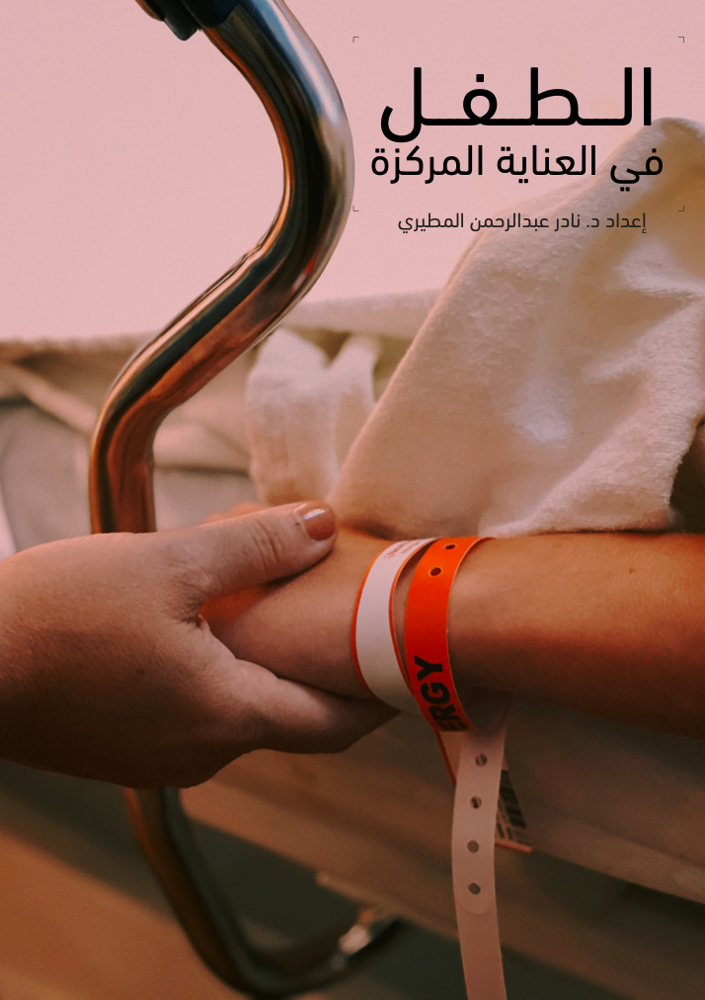

الطفل في العناية المركزة
دليل توعوي للأهل عن العناية المركزة للأطفال
امسح الرمز لفتح الكتاب مباشرة.
تحميل رمز QR
تحميل رمز QR
كتب تثقيفية وتوعوية في صحة الأطفال — القراءة والتحميل مجانًا

دليل توعوي للأهل عن العناية المركزة للأطفال
دليل توعوي عن أمراض الصدر والتنفس عند الأطفال